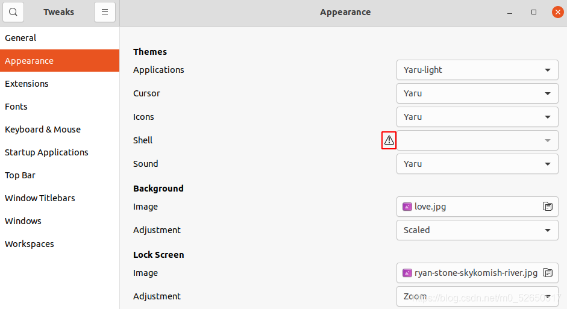
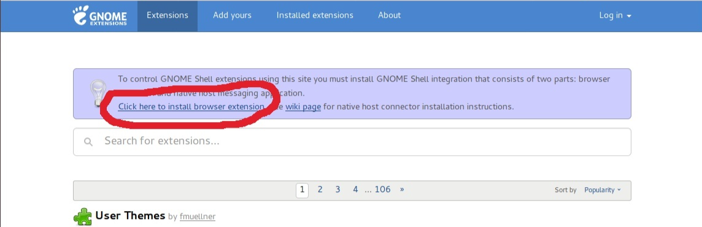
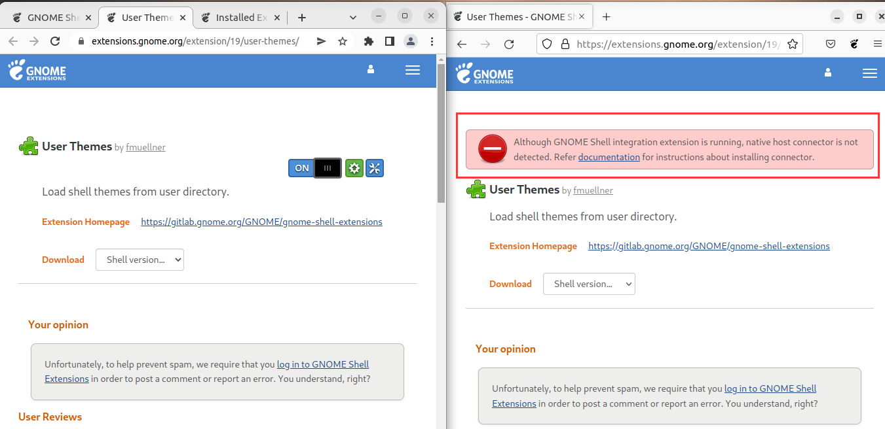
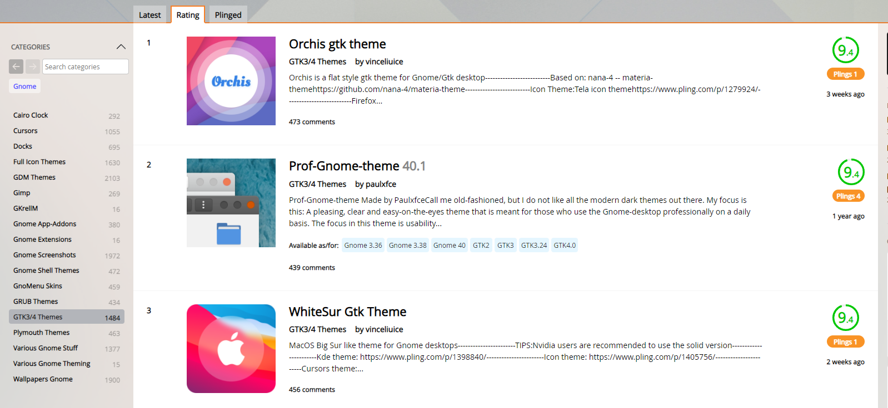
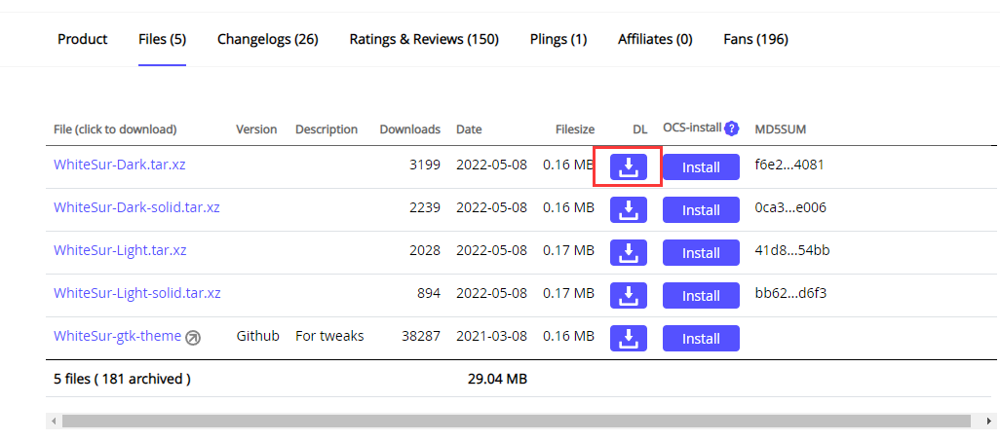
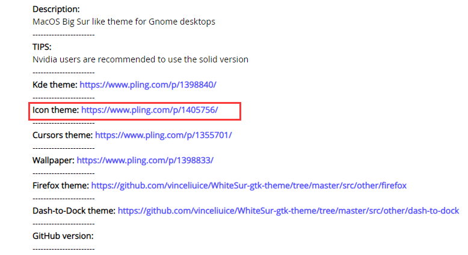
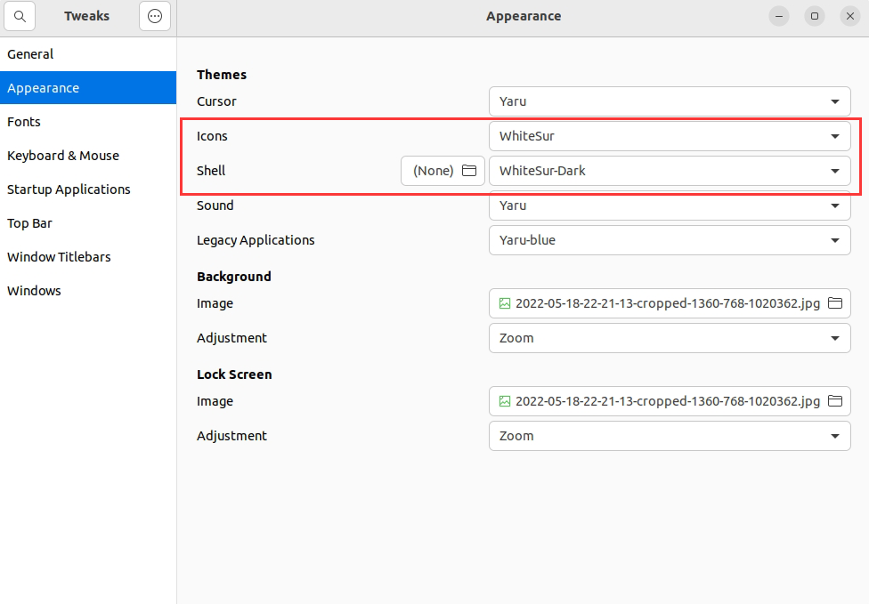

Ubuntu20.04美化篇
像之前说过的，用Linux的起因是看到了很炫酷的桌面，在问了之后发现Ubuntu也能用deepin的dde桌面，甚至还找到了一篇教程。但是后来感觉有点大兴土木了（不是
于是就打算只换个主题先用着看看，然后发现找的一堆教程都早已过了时效性了，有些功能早就挪了位置。所以此篇博客也只以文章发布时间后一段时间有时效性。期间在第一遍快完成的时候还把系统搞坏过一次，重启的时候开不了机一直在左上角闪横杠（其实应该是电脑的硬盘问题），重装了一次系统。然后还重来了一遍（悲
操作步骤
1. 前置准备
先执行如下下载命令（可能有些命令不是必须的但我忘了）
sudo apt update
sudo apt-get update
sudo apt install gnome-tweaks
sudo apt install chrome-gnome-shell //这条非常重要
sudo apt install gnome-tweaks-extension这个时候打开应用能搜索到Tweaks了（中文版应该叫优化）
但打开后会发现是这样的（版本号不同可能大同小异）

重点是Shell前面有个三角形，而我们换主题主要依赖的就是这个选项，因此这个时候需要登陆插件网站下载插件来将这个三角形去掉。
打开gnome扩展网站：https://extensions.gnome.org/
刚打开就会看到这样的提示让你下载浏览器插件

重点来了，当时在这个地方栽了半天没想明白为什么，直接跳过了，也是第一遍失败的直接原因
这个地方装插件用默认的Firefox是不行的！！！
必须要换Chrome，再点击下载插件（访问谷歌插件商店的方式请自行发挥）
2. 安装gnome扩展
访问：https://extensions.gnome.org/extension/19/user-themes/
下载用户主题插件，或在上一步的页面搜索user-themes
将按钮打开成ON

如果用火狐的话会看见右边的画面
3. 下载主题
访问gnome主题网站：https://www.gnome-look.org/
选择一个自己喜欢的主题

这里以WhiteSur Gtk为例
点第一个下载即可

配套的图标下载在这里

下载方式相同
4. 应用主题
默认的读取主题路径是/usr/share/themes
默认的读取图标路径是/usr/share/icons
这里注意，直接解压然后将文件夹复制粘贴过去是没有权限的
所以直接一步到位解压文件到/usr/share/themes文件夹：
sudo tar -xvJf ~/Downloads/WhiteSurDark.tar.xz -C /usr/share/themes或将解压后的文件
sudo cp -r+“空格”+~/你要复制的文件的原目录/你要复制的文件+“空格”+/usr/目标目录然后更改这两项即可

然后再在插件应用商店寻找更改任务栏的插件，博主电脑使用dash to dock会有bug，遂放弃而改用dock from dash
在一次唤醒之后你可能会发现有两个dock，解决办法：
卸载系统自带的Dock，命令如下：
sudo apt remove gnome-shell-extension-ubuntu-dock如果以后需要重新使用原生dock，安装命令如下：
sudo apt install gnome-shell-extension-ubuntu-dock然后就大功告成了

配置鼠标光标 Cursor的操作大同小异，文件夹同样在icons里
5. 配置登陆背景
下载ubuntu-20.04-change-gdm-background文件：
wget https://raw.githubusercontent.com/thiggy01/change-gdm-background/master/change-gdm-background出现
443... failed: Connection refused.错误的解决方案：https://blog.csdn.net/m0_52650517/article/details/119831630给change-gdm-background文件执行的权限：
sudo chmod 777 change-gdm-background修改背景图片：
sudo ./change-gdm-background /usr/share/backgrounds/Nick_Wilde_and_Judy_Hopps.jpg其中
/usr/share/backgrounds/Nick_Wilde_and_Judy_Hopps.jpg为背景图片所在路径。屏蔽紫色过渡动画：
对于登录系统的紫色过渡动画，就是输入密码回车，到进入系统这个过程的紫色动画，可以通过 gnome 的扩展进行屏蔽，名字是Good Bye GDM3 Login Screen to Desktop Flick for Ubuntu 20.04 only
地址为 https://extensions.gnome.org/extension/3037/good-bye-gdm-flick/。
本作品采用知识共享署名-非商业性使用进行许可。
本文作者：Kotlin